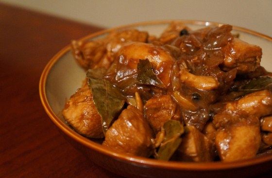
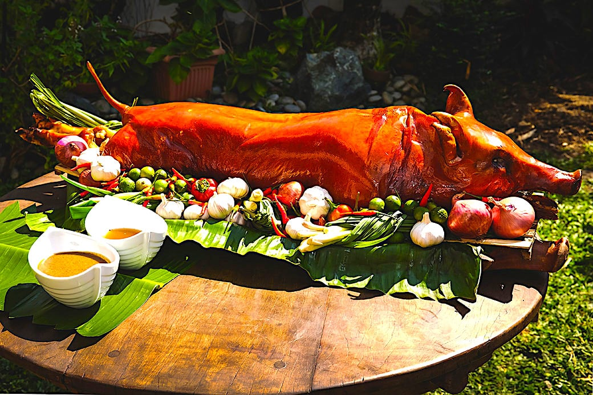

Filipino dishes
ADOBO
BULALO

LECHON
One of the most popular Filipino dishes is adobo, which is also maybe the most significant item on this list. It is frequently recognized as a national dish of the Philippines. Similar to sinigang, the term "adobo" can be used to describe both the food and the preparation technique.
A beef dish from the Philippines is called bulalo. The beef shanks and marrow bones are cooked until the collagen and fat have melted into the clear liquid to produce this light-colored soup. The Southern Luzon region of the Philippines is where Bulalo is indigenous. Regarding its beginning, numerous references have emerged.
One of the most well-liked foods in the Philippines is lechon, which is derived from a Spanish phrase for roasted suckling pig. Typically packed with lemongrass, tamarind, garlic, onions, and chives, the slow-roasted suckling pig is then cooked over an open flame on a long bamboo spit.